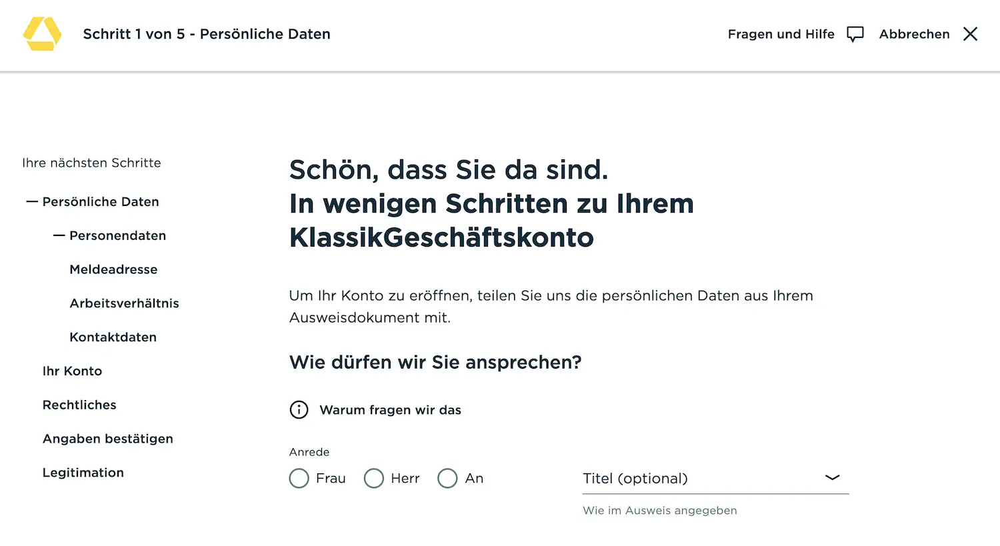

Das Wichtigste: Commerzbank Geschäftskonto
- Klassik: bei Online-Abschluss in den ersten 12 Monaten erstattbar, danach 15,90 €/Monat; 10 beleglose Buchungen sind inklusive.
- 3 Tarife: Klassik (15,90 €), Premium (8,90 € für 24 Monate, danach 34,90 €) und Premium Plus (54,90 €); den 100-€-Bonus gibt es vor allem für Premium und Premium Plus.
- Einlagensicherung: gesetzlich bis 100.000 € (EdB) plus zusätzlicher Schutz über den Bankenfonds.
- Bargeld ist möglich: Ein- und Auszahlungen kosten 2,50 € je Vorgang; im Plus-Tarif sind 5 Bargeldvorgänge inklusive.
- Stärken: persönliche Beratung im Filialnetz, Finanzierungsmöglichkeiten und breite Unterstützung vieler Rechtsformen.
- DATEV: je nach Tarif enthalten oder zubuchbar; im Klassik-Tarif sind COINFO und COTRANSFER kostenpflichtig.
Für wen ist das Commerzbank Geschäftskonto geeignet — und für wen nicht?
Am besten passt die Commerzbank zu Unternehmen, die klassisches Filialbanking mit digitalen Basisfunktionen verbinden möchten. Besonders relevant ist das Konto für bargeldintensive Betriebe, Unternehmen mit Kreditbedarf und Gründer mit Wunsch nach persönlicher Beratung. Für rein digitale, buchungsstarke Unternehmen ohne Bargeldbedarf gibt es oft günstigere Alternativen.
- Bargeldintensive Betriebe — Ein- und Auszahlungen sind über Filiale und Automaten möglich
- Gründer mit Kreditbedarf — Beratung, Kontokorrent und KfW-Optionen
- Unternehmen mit DATEV — COINFO/COTRANSFER je nach Tarif nutzbar
- Filialaffine Kunden — persönlicher Ansprechpartner und bundesweites Filialnetz
- Buchungsstarke Unternehmen im Klassik-Tarif — ab der 11. Buchung fallen Zusatzkosten an
- Nutzer mit Wunsch nach integrierter Buchhaltung — kein Lexware- oder Sevdesk-Bundle
- Preisfokussierte Unternehmen — kein dauerhaft kostenloser Tarif
- Premium nur für den Einstieg — nach 24 Monaten steigt der Preis deutlich
Commerzbank Geschäftskonto: Rechtsformen
Die offizielle Commerzbank-Übersicht führt vor allem Freiberufler, Einzelunternehmer / Gewerbetreibende, GbR sowie GmbH, GmbH & Co. KG, KG und OHG auf. Für einzelne Zielgruppen wie Kleinunternehmer sowie GmbH & UG gibt es zusätzliche Detailseiten. Grundsätzlich ist ein gültiger Personalausweis oder Reisepass erforderlich.
| Rechtsform | Status | Unterlagen / Hinweis |
|---|---|---|
| Freiberufler | Möglich |
|
| Einzelunternehmer, Gewerbetreibende, Kleinunternehmer | Möglich |
|
| GbR | Möglich |
|
| GmbH, UG, GmbH & Co. KG, KG, OHG | Möglich |
|
| AG, Vereine, Stiftungen und weitere Sonderformen | Nicht eindeutig |
|
Commerzbank Geschäftskonto: Kosten & Konditionen
Die folgende Tabelle zeigt alle wesentlichen Gebühren und Konditionen für die drei Commerzbank-Tarife im Vergleich. Alle Angaben basieren auf den offiziellen Commerzbank-Preisangaben, Stand 6. Juni 2026.
| Leistung | Klassik | Premium | Premium Plus |
|---|---|---|---|
| Grundgebühr mtl. | 15,90 € 0 € in den ersten 12 Monaten* |
8,90 € für 24 Monate, danach 34,90 € |
54,90 € Kein Einführungspreis |
| Online-Bonus (Neukunden) | nicht ausgewiesen | 100 € | 100 € |
| Beleglose Buchungen | 10 / Monat inklusive danach 0,20 € / Buchung |
50 / Monat inklusive danach 0,15 € / Buchung |
250 / Monat inklusive danach 0,10 € / Buchung |
| Echtzeit-Überweisungen | Inklusive wie belegloser Zahlungsauftrag |
Inklusive wie belegloser Zahlungsauftrag |
Inklusive wie belegloser Zahlungsauftrag |
| Girocard (Debitkarte) | 1 kostenlos inklusive | 1 kostenlos inklusive | 2 kostenlos inklusive |
| Business Card (Kredit-/Debitkarte) | Debit: 5,90 €/Monat Kreditkarte: 79,90 €/Jahr |
1 kostenlos (Debit oder Kredit) | 2 kostenlos inklusive |
| Virtuelle Karten | nicht ausgewiesen | nicht ausgewiesen | nicht ausgewiesen |
| Bargeldeinzahlung | 2,50 € / Vorgang | 2,50 € / Vorgang | 5 kostenlos / Monat danach 2,50 € / Vorgang |
| Bargeldabhebung | 2,50 € / Vorgang Cash Group nutzbar |
2,50 € / Vorgang | 5 kostenlos / Monat danach 2,50 € / Vorgang |
| Unterkonto / Fremdwährungskonto | 9,90 €/Monat je Konto | 9,90 €/Monat je Konto | 1 Fremdwährungskonto kostenlos Weitere: 9,90 €/Monat |
| Tagesgeld | Separates Tagesgeldkonto* 2,75 % p.a. bis 100.000 €, 4 Monate |
Separates Tagesgeldkonto* 2,75 % p.a. (Aktionsangebot) |
Separates Tagesgeldkonto* 2,75 % p.a. (Aktionsangebot) |
| Beleghafte Buchungen | 2,50 € / Auftrag | 2,50 € / Auftrag | 2,50 € / Auftrag |
| Multibanking | Inklusive | Inklusive | Inklusive |
| DATEV (COINFO/COTRANSFER) | Add-on: +13 €/Monat COTRANSFER: +6 €/Monat |
Kostenlos inklusive | Kostenlos inklusive |
| Direkt zum Tarif | Klassik → | Premium → | Premium Plus → |
Commerzbank Geschäftskonto: Vor- und Nachteile
- Filialbank mit Beratung und persönlichem Ansprechpartner
- Bargeldservice mit Ein- und Auszahlungen
- Cash Group mit großem Automatennetz in Deutschland
- Für viele Rechtsformen geeignet, auch für GmbH & Co.
- Echtzeit-Überweisungen in allen Tarifen ohne Aufpreis
- Nicht dauerhaft kostenlos — nach 12 Monaten ab 15,90 €/Monat
- Nur 10 Freibuchungen im Klassik — für aktive Firmen oft zu wenig
- Premium wird später deutlich teurer — nach 24 Monaten 34,90 €/Monat
- Keine integrierten Buchhaltungs-Tools im Konto enthalten
- DATEV im Klassik extra und zusätzlich kostenpflichtig
Funktionen & Features im Detail
Der wichtigste Unterschied zu reinen Neobanken ist bei der Commerzbank das Full-Service-Angebot einer klassischen Universalbank. Filialzugang, persönliche Beratung und Finanzierungsmöglichkeiten werden mit digitalem Banking kombiniert.
Digitales Banking
Multibanking und Echtzeit-Überweisungen gehören zu den zentralen digitalen Funktionen. Externe Konten lassen sich im Online-Banking bündeln, und Echtzeitüberweisungen werden in Online-Banking und App unterstützt.
Finanzierung & Zusatzleistungen
Ein klarer Unterschied zu vielen Neobanken liegt bei klassischen Finanzierungslösungen wie Kontokorrentkredit, Investitions- und Betriebsmittelkrediten sowie KfW-nahen Angeboten. Ergänzend können je nach aktuellem Angebot auch Tagesgeld, Festgeld oder ein Depot relevant sein.
Commerzbank Geschäftskonto: Karten
Relevant sind vor allem Girocard, Business Card Premium als Debit- oder Kreditkarte sowie Apple Pay und Google Pay. Die wichtigsten Unterschiede nach Tarif zeigt die Tabelle.
| Karte | Klassik | Premium | Premium Plus |
|---|---|---|---|
| Girocard (Debit) | 1 kostenlos | 1 kostenlos | 2 kostenlos |
| Business Card Premium Debit | 5,90 €/Monat | 1 kostenlos | Im 2er-Bundle kostenlos |
| Business Card Premium (Kreditkarte) | 79,90 €/Jahr | Alternativ zu Debit: kostenlos | Alternativ: kostenlos |
| Virtuelle Karten | nicht ausgewiesen | nicht ausgewiesen | nicht ausgewiesen |
| Apple Pay / Google Pay | Ja | Ja | Ja |
Commerzbank Geschäftskonto: Bargeld & Abhebungen
Für Unternehmen mit regelmäßigem Bargeldverkehr bleibt die Commerzbank einer der wenigen Anbieter mit klassischen Ein- und Auszahlungen.
| Leistung | Klassik | Premium | Premium Plus |
|---|---|---|---|
| Bargeldeinzahlung | 2,50 € / Vorgang | 2,50 € / Vorgang | 5 / Monat inklusive danach 2,50 € / Vorgang |
| Bargeldabhebung | 2,50 € / Vorgang | 2,50 € / Vorgang | 5 / Monat inklusive danach 2,50 € / Vorgang |
| Schaltervorgang | 5 € / Vorgang | 5 € / Vorgang | 5 € / Vorgang |
| Cash Group | Ja | Ja | Ja |
DATEV, HBCI und Buchhaltungsintegration bei der Commerzbank
Für DATEV-nahe Workflows sind vor allem COINFO, COTRANSFER und HBCI relevant. Die wichtigsten Punkte zeigt die Übersicht.
| Leistung | Klassik | Premium | Premium Plus |
|---|---|---|---|
| COINFO | 13 €/Monat | Inklusive | Inklusive |
| COTRANSFER | 6 €/Monat | Inklusive | Inklusive |
| HBCI | Verfügbar | Verfügbar | Verfügbar |
| Integrierte Buchhaltungssoftware | Nicht enthalten | Nicht enthalten | Nicht enthalten |
Einlagenschutz & Regulierung bei Commerzbank
Die Commerzbank AG ist eine deutsche Vollbank und als Kreditinstitut durch BaFin und Europäische Zentralbank (EZB) beaufsichtigt. Kundenguthaben sind bis 100.000 € gesetzlich geschützt; zusätzlich besteht eine freiwillige Absicherung über den Einlagensicherungsfonds des Bundesverbandes deutscher Banken.
| Status | Kreditinstitut / Vollbank |
| Aufsicht | BaFin und Europäische Zentralbank (EZB) |
| Gesetzliche Einlagensicherung | Bis 100.000 € über die EdB |
| Zusätzlicher Schutz | Einlagensicherungsfonds des Bundesverbandes deutscher Banken |
Commerzbank Geschäftskonto online eröffnen — so geht's
Die Kontoeröffnung erfolgt online in drei Schritten: Antrag ausfüllen, Identität bestätigen und Online Banking einrichten. Für juristische Personen bewirbt die Commerzbank eine digitale Kontoeröffnung innerhalb von 48 Stunden über das eBO-Postfach. Je nach Rechtsform und Unterlagen kann zusätzlicher Prüfungsbedarf entstehen.
- Online-Antrag ausfüllen: Persönliche Daten, Unternehmensinfos und Zugangsdaten für Online-Banking festlegen. Dauert ca. 5 Minuten.
- Video-Ident: Legitimation per Videoidentifikation mit der IDnow-App (alternativ: PostIdent). Der genaue Ablauf hängt von Rechtsform, Legitimation und eingereichten Unterlagen ab.
- IBAN erhalten: Nach erfolgreicher Kontoeröffnung und Prüfung der Unterlagen wird die IBAN bereitgestellt.
- Karten und Unterlagen erhalten: Physische Karten und weitere Unterlagen werden nach Freischaltung separat bereitgestellt.
- 100 € Bonus sichern (Premium / Premium Plus): Nach Erfüllung der Bedingungen wird der Bonus aufs Konto gutgeschrieben.
Welche Unterlagen werden für die Kontoeröffnung typischerweise benötigt?
Die genauen Unterlagen hängen von der Rechtsform ab.
- Personalausweis oder Reisepass zur Legitimation
- Je nach Rechtsform zusätzlich z. B. Steueridentifikation, Gewerbeanmeldung oder gesellschaftsbezogene Unterlagen
- GbR meist Steueridentifikation, Gesellschaftervertrag und Vertretungsberechtigung
- Registerpflichtige Rechtsformen insbesondere Handelsregisterauszug sowie weitere Unternehmensunterlagen

Commerzbank Geschäftskonto Fazit 2026
Kurzfazit: stark bei Bargeld, Filialservice und persönlicher Betreuung, schwächer bei integrierter Buchhaltung, virtuellen Karten und digital-first Workflows.
Besonders lohnt sich das Commerzbank Geschäftskonto 2026 für stationäre Betriebe mit Bargeldumsatz, für Gründer mit Kreditbedarf und für Unternehmen mit Wunsch nach persönlichem Ansprechpartner in der Filiale. Die Commerzbank Geschäftskonto Kosten sind grundsätzlich nachvollziehbar aufgebaut, sollten wegen Aktionspreisen, Bonusbedingungen und transaktionsabhängigen Gebühren aber regelmäßig abgeglichen werden.
Nicht das Richtige? Diese Alternativen könnten passen
Alle drei Anbieter haben wir ebenfalls getestet — hier die wichtigsten Unterschiede auf einen Blick.
Sinnvoll für Unternehmen mit Bargeldbedarf und Filialfokus.
✓ starke Bargeldnutzung im Alltag
× keine Low-Cost-Lösung
Naheliegend für Unternehmen, die eine große Filialbank mit Beratung suchen.
✓ passend im Premium-Segment
× kein günstiger Einstieg
Spannend für preisbewusste Unternehmen mit stärkerem Digitalfokus.
✓ digitaler als Filialbanken
× Bargeld weniger direkt nutzbar
Alle Konten im großen Vergleich: Geschäftskonto-Vergleich 2026 →